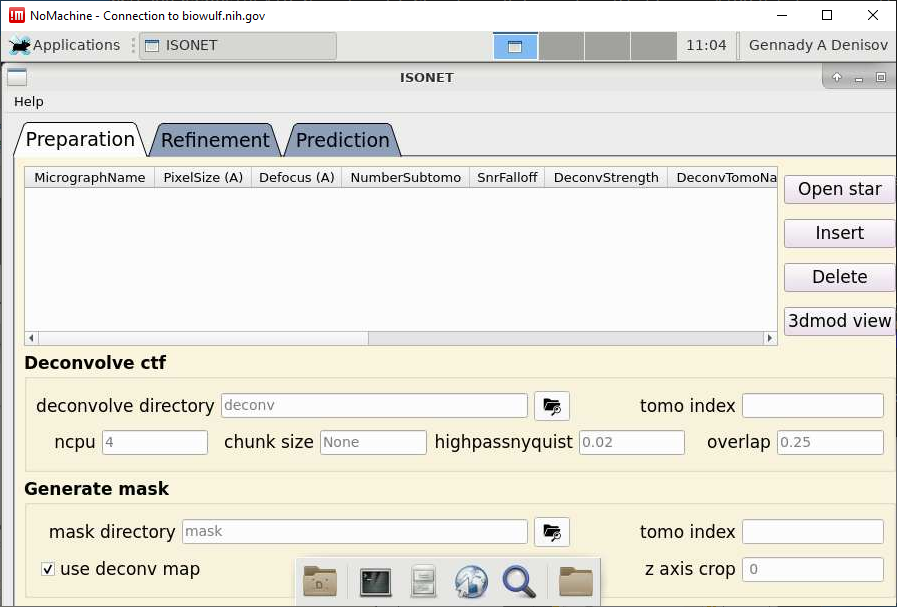

IsoNet is a deep learning-based software package that iteratively reconstructs the missing-wedge information and increases signal-to-noise ratio, using the knowledge learned from raw tomograms. Without the need for sub-tomogram averaging, IsoNet generates tomograms with significantly reduced resolution anisotropy. Applications of IsoNet to three representative types of cryoET data demonstrate greatly improved structural interpretability: resolving lattice defects in immature HIV particles, establishing architecture of the paraflagellar rod in Eukaryotic flagella, and identifying heptagon-containing clathrin cages inside a neuronal synapse of cultured cells. detect AMR genes from thirteen genomes of Pseudomonas strains.
Allocate an interactive session and run the program. Sample session:
[user@biowulf]$ sinteractive
[user@cn3107 ~]$ module load IsoNet
[+] Loading singularity 3.10.5 on cn4183
[+] Loading CUDA Toolkit 10.2.89 ...
[+] Loading cuDNN/7.6.5/CUDA-10.2 libraries...
[+] Loading IsoNet 0.2.1
[user@cn3107 ~]$ isonet.py -h
INFO: Showing help with the command 'isonet.py -- --help'.
NAME
isonet.py - ISONET: Train on tomograms and restore missing-wedge
SYNOPSIS
isonet.py -
DESCRIPTION
for detail discription, run one of the following commands:
isonet.py prepare_star -h
isonet.py prepare_subtomo_star -h
isonet.py deconv -h
isonet.py make_mask -h
isonet.py extract -h
isonet.py refine -h
isonet.py predict -h
isonet.py resize -h
isonet.py gui -h
[user@cn3107 ~]$ isonet.py gui

End the interactive session:
[user@cn3107 ~]$ exit salloc.exe: Relinquishing job allocation 46116226 [user@biowulf ~]$